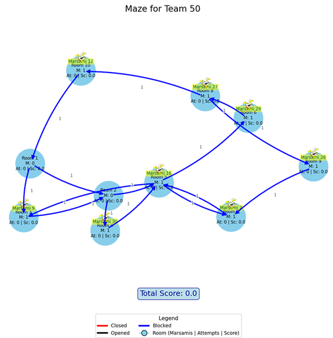
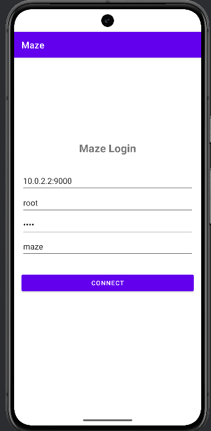
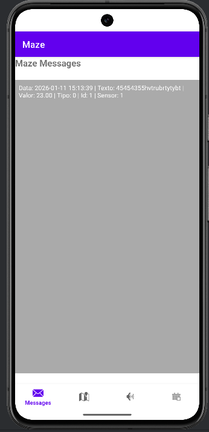
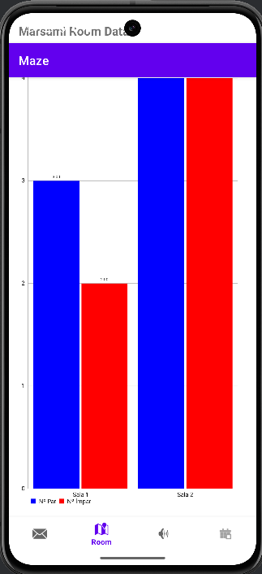
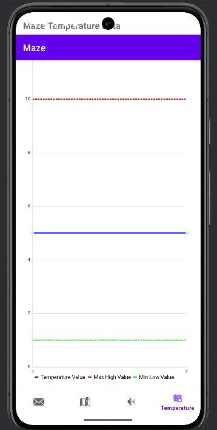
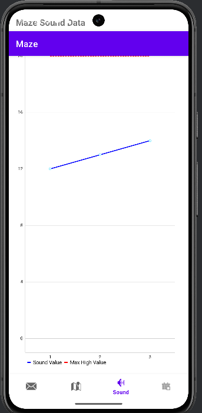
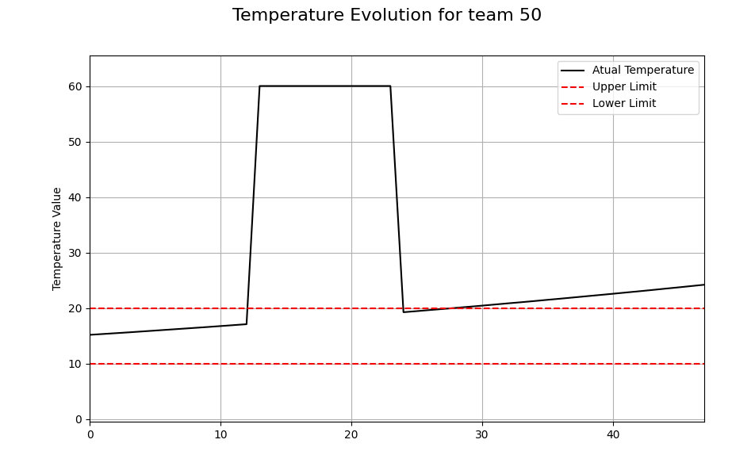
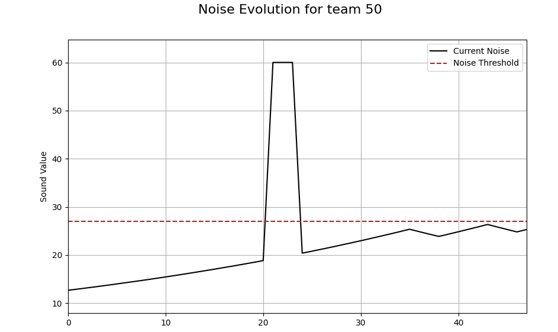

Projeto piSID · 2026/2027
Projeto Labirinto
Constrói um jogador distribuído capaz de observar um labirinto em tempo real, preservar os dados, reagir a eventos e continuar saudável quando alguma componente falha.
PC 1MongoDB
PC 2MySQL
PC 3Controlo
MQTT + SSH
um sistema distribuído
01
A missão
Não basta guardar dados: o sistema tem de compreender o jogo e sobreviver a falhas
No fim da simulação, o teu software deve saber exatamente quantos marsamis odd e even ficaram em cada sala. Durante o jogo, deve reconhecer oportunidades de pontuação e reagir em tempo real.
↗
Preparação para o mundo empresarial
Competências que vais praticar num sistema próximo da realidade
Este projeto junta tecnologias, decisões de arquitetura e problemas que surgem em sistemas empresariais reais: distribuição, integração, falhas, segurança e evolução contínua.
Sistemas distribuídos
Distribuir dados e processamento por, pelo menos, três computadores.
Persistência poliglota
Combinar uma base relacional, MySQL, com uma base não relacional, MongoDB.
Tolerância a falhas
Responder a crashes de bases de dados, computadores e componentes de software.
Distribuição sem redundância
Repartir informação por vários PCs sem guardar inadvertidamente os mesmos dados mais do que uma vez.
Migração incremental
Transferir dados entre bases de dados de forma contínua, controlada e reiniciável.
Troca de mensagens com MQTT
Receber dados dos sensores e transportar informação entre computadores através de mensagens.
Qualidade dos dados
Detetar dados anómalos, valores sujos e outliers antes de os encaminhar.
Tempo real
Tomar decisões e atuar no sistema com granularidade de segundos.
Desenvolvimento multiplataforma
Trabalhar com Python, PHP e Android Studio numa solução integrada.
Operação remota
Comunicar entre computadores e gerir processos através de SSH.
Contentores
Utilizar Docker para criar ambientes consistentes e reproduzíveis.
Requisitos em evolução
Tomar decisões perante indefinições e adaptar a solução quando a especificação muda.
Segurança aplicacional
Proteger formulários, consultas e dados contra SQL injection, acessos indevidos e outros ataques que possam comprometer a aplicação.
02
O mundo do jogo
Um labirinto vivo, diferente para cada equipa
Os marsamis começam distribuídos aleatoriamente, circulam pelos caminhos disponíveis e acabam por parar por cansaço ou por condições ambientais.
- Cada corredor liga apenas duas salas e permite a circulação num único sentido.
- Podem chegar e sair vários corredores de uma mesma sala.
- Sempre que um marsami entra ou sai de uma sala é ativado um sensor de passagem.
- Cada ativação do sensor corresponde a um único marsami: dois marsamis não podem entrar ou sair em conjunto.
- Cada corredor pode ser aberto ou fechado, permitindo ou impedindo a circulação.
- Existem marsamis odd e even.
- Ruído e temperatura excessivos terminam a simulação e fecham os corredores.
- Podem existir vários sensores de temperatura e de som no labirinto, identificados por nome e zona. Cada leitura continua a pertencer ao labirinto do player indicado na mensagem.
- O ar condicionado reduz a temperatura de forma incremental.
- Cada equipa começa com a mesma planta, mas as decisões sobre portas fazem os labirintos divergir.

+1
Encontra o equilíbrio
Quando odd = even numa sala, podes disparar um gatilho. Se a condição ainda for verdadeira, ganhas 1 ponto; se já tiver desaparecido, perdes 0,5. Só podes tentar três vezes por sala.
⌁
Prolonga a simulação
Não precisas de esperar passivamente pelo fim. Liga ou desliga o ar condicionado para controlar a temperatura e fecha ou abre corredores para reduzir os movimentos e, consequentemente, o ruído. Uma boa estratégia de atuação pode evitar que os limites sejam atingidos e que a simulação termine antes do necessário.
★
Mostra que a tua equipa domina o desafio
Uma equipa demonstra um bom desempenho quando, no fim da simulação, consegue indicar corretamente quantos marsamis odd e even estão em cada sala e, durante a simulação, obtém pontos com disparos certeiros dos gatilhos.
03
Arquitetura distribuída
Três papéis, uma única visão coerente do sistema
SIMULADOR / NUVEMSensores e atuadores
conhece apenas MQTTPC 1↔PC 3ponto comum↔PC 2PC1 e PC2 não comunicam diretamente
CAMADA DISTRIBUÍDA
3 réplicasCluster MongoDB
PC 1
Entrada MongoDBConsumidor MQTT · mongos · Shard APC ESCOLHIDO PELA EQUIPA
Shard BPC3 ou um computador adicional acessível ao mongosSIMULADOR
Sem acesso aos shardsPublica apenas no broker MQTTO mongos fica no PC1 e distribui os documentos por shards suportados por, pelo menos, dois computadores. A localização do segundo shard é uma decisão da equipa: pode ser o PC3 ou até um quarto computador, desde que comunique com o mongos. Será que pode ficar no PC2? Se escolher o PC3, este deixa de ser exclusivamente controlador e acumula também o papel de nó MongoDB; a equipa deve justificar esta opção e analisar o impacto de uma falha. Os config servers e as réplicas são componentes internos do cluster; o simulador conhece apenas o broker MQTT.
migração incremental · sem duplicados↓
PC 2
Dados e aplicações
MySQL→PHP / HTML→Android
Consolida dados relacionais, configurações, alertas e informação para consulta.
PC 3
Controlo e saúde
SSH → PC 1SSH → PC 2
Monitoriza processos, conhece os endereços dos restantes computadores e reinicia componentes quando necessário.
PC 1 e PC 2
↔ consultam e atualizam a MySQL na nuvem→ enviam comandos para os atuadores na nuvem
ligações independentes; não representam comunicação direta entre PC1 e PC2MQTT: dados e comandosNuvem: MySQL e atuadoresSSH: monitorização e recuperação
Simulador e Jogador
O Jogador é o software construído pela equipa
Não é uma pessoa nem faz parte do Simulador. É o conjunto de programas da equipa que observa o que acontece, mantém o seu próprio estado e toma decisões em tempo real.
Servidor / Simulador
Move os marsamis, produz leituras dos sensores e executa as ações pedidas.
SensoresAtuadores
sensores →MQTT← comandosúnico canal com o servidor
Jogador
Software distribuído que recebe, interpreta, guarda e reage aos dados.
PC 1PC 2PC 3
ObservaRecebe passagens, temperatura, som e estado da simulação.
Reconstrói e decideAtualiza a localização dos marsamis, deteta situações e escolhe quando atuar.
AtuaEnvia comandos para portas e ar condicionado e dispara gatilhos quando odd = even.
No fim, o Jogador tem de conseguir:indicar exatamente quantos marsamis odd e even estão em cada sala;obter pontos identificando equilíbrios em tempo real;ajudar a evitar o fim prematuro da simulação.
Regra de separação: o Servidor mantém a realidade do labirinto; o Jogador constrói a sua visão a partir das mensagens recebidas. A equipa não controla diretamente o Simulador nem acede à sua base de dados interna.
04
Dados e acesso
O histórico tem de ser fiável, explicável e protegido
MongoDB
Os sensores escrevem em três réplicas. Define coleções, sharding e a estratégia de tolerância a falhas. O sharding tem de ser suportado por, pelo menos, dois PCs, distribuindo efetivamente a informação entre máquinas.
MySQL local
Podes evoluir o modelo fornecido. Justifica alterações e atualiza os consumidores Android das tabelas afetadas.
Migração
É automática, incremental e em tempo real. O mesmo documento MongoDB não pode ser inserido duas vezes no MySQL.
Privilégios
Cada utilizador altera apenas os próprios dados. A equipa mantém as suas simulações; SPs, views e triggers refletem a política de acesso.
REFERÊNCIA · NUVEMMySQL sempre onlineConfiguração fornecida pelo servidorCONSULTA
BASE
mazeSERVIDOR
194.210.86.10ACESSO
aluno / aluno
mysql --user=aluno --password=aluno --host=194.210.86.10 maze
Para que serve? Contém a configuração de referência do labirinto. Os valores mantêm-se estáveis durante cada simulação e podem ser consultados pelos programas da equipa.
MODELO DE REFERÊNCIAConfiguração do labirinto
2 tabelasCorridor
RoomAINTRoomBINT
Define cada corredor através das duas salas que liga.
SetupMaze
numberroomsnúmero de salasnumbermarsamisnúmero de marsamisnumberplayersnúmero de jogadores — irrelevante para as equipasnormaltemperaturetemperatura normal do labirintominimumtemperaturetemperatura mínima permitidamaximumtemperaturetemperatura máxima permitidanormalnoisenível normal de ruídomaximumnoiseruído máximo permitidosensor_shutdown_no_movement_secondstempo sem movimentos após o qual os sensores param
O último campo permite que os sensores continuem a publicar durante algum tempo depois de terminarem os movimentos.
MODELO DA EQUIPA · PC2MySQL localHistórico consolidado e aplicaçãoEVOLUTIVA
A equipa é responsável por esta base. O modelo inicial pode ser adaptado às decisões do projeto, desde que cada alteração seja justificada.
ANDROID
Esta zona é consultada pela aplicação Android; qualquer alteração deve ser refletida nos scripts e na própria aplicação.
MODELO RELACIONAL INICIALDados consolidados no PC2
PKFKAndroid
Simulacao
IDSimulacaoautoincrementDescricaoTEXTEquipaINTDataHoraInicioTIMESTAMP
MedicoesPassagens
IDMedicaoautoincrementHoraTIMESTAMPSalaOrigemINTSalaDestinoINTMarsamiINTStatusINT
Utilizador
NomeVARCHAR(100)TelemovelVARCHAR(12)TipoVARCHAR(3)EmailVARCHAR(50)DataNascimentoDATEEquipaINT
Mensagens
IDautoincrementHoraTIMESTAMPSalaINTSensorVARCHAR(10)LeituraDECIMAL(6,2)TipoAlertaVARCHAR(50)MsgVARCHAR(100)HoraEscritaTIMESTAMP
Temperatura
IDTemperaturaautoincrementHoraTIMESTAMPTemperaturaVARCHAR(12)SensorVARCHAR(10)
Som
IDSomautoincrementHoraTIMESTAMPSomVARCHAR(12)SensorVARCHAR(10)
OcupacaoLabirinto
IDSimulacaoINTNumeroMarsamisOddINTNumeroMarsamisEvenINTSalaINT
＋
Tabelas adicionais podem ser criadas para suportar as decisões da equipa.
05
Contrato de mensagens
MQTT liga sensores, decisões e atuadores
pisid_mazeact · cliente → servidor
1. O cliente publica comandos; o servidor recebe-os
{"Action":"Score", "Player":1, "Room":2}
{"Action":"OpenDoor", "Player":1, "RoomOrigin":3, "RoomDestiny":2}
{"Action":"CloseDoor", "Player":1, "RoomOrigin":3, "RoomDestiny":2}
{"Action":"CloseAllDoor", "Player":1} · {"Action":"OpenAllDoor", "Player":1}
{"Action":"AcOn", "Player":1} · {"Action":"AcOff", "Player":1}
Este tópico é comum a todos. Cada servidor lê o campo Player e ignora os comandos destinados aos outros players.
pisid_mazeact_result_n · servidor → cliente
2. O servidor publica o resultado; o cliente recebe-o
{"Player":1,"Action":"Score","Result":"CORRECT","Room":2,"MarsamisOdd":3,"MarsamisEven":3,"ScoreDelta":1.0,"TotalScore":2.5,"Attempt":2,"MaximumAttempts":3,"Hour":"2024-07-04 16:29:21.281898"}
O cliente subscreve o tópico do seu player. Result pode indicar APPLIED, NO_CHANGE, CORRECT, WRONG ou REJECTED, conforme a ação.
pisid_mazestatus_n · servidor → cliente
Estado da simulação
O cliente subscreve este tópico para receber SIMULATION_STARTED, MOVEMENT_SIMULATION_FINISHED, SENSORS_FINISHED e SIMULATION_FINISHED. Assim, o fim dos movimentos não é confundido com o fim das leituras.
pisid_mazesound_n · servidor → cliente
Ruído
{"Player":11,"Sensor":"sound_zone_1","Zone":"Zone 1","Hour":"2024-07-04 16:29:21.281898","Sound":19.0}
pisid_mazetemp_n · servidor → cliente
Temperatura
{"Player":11,"Sensor":"temp_zone_1","Zone":"Zone 1","Hour":"2024-07-04 16:29:21.281898","Temperature":19.0}
pisid_mazemov_n · servidor → cliente
Movimento
{"Player":10,"Marsami":40,"RoomOrigin":3,"RoomDestiny":5,"Hour":"2024-07-04 16:29:21.281898","Status":1}
Status 1: passagem normal · Status 0: sem saída · Status 2: cansaço. Origem 0 representa a largada inicial.
Arrancar o simulador
./pymaze numero_player
Exemplo: ./pymaze 7. Para ver toda a informação no terminal: ./pymaze 7 --log-level 3 --log-categories ALL.
Precisas de outro tipo de mensagens ou de testar sem MQTT?
O assistente de execução do Maze Simulator explica apenas as opções disponíveis ao aluno, constrói o comando e deixa-o pronto para copiar.
06
Experiência móvel
O telemóvel transforma dados técnicos em informação útil
A aplicação Android deve permitir iniciar sessão e acompanhar a ocupação odd/even por sala, temperatura, ruído e alertas de perigo.







Os valores das imagens são ilustrativos; mostram apenas o tipo de leitura esperado.
07
Antes de considerares terminado
O sistema deve manter-se correto mesmo quando ocorrem falhas
Há requisitos propositadamente abertos. Identifica as decisões, discute-as em equipa, regista o racional e testa as consequências. Prepara uma solução flexível: é provável que, ao longo do projeto, surjam alterações à especificação.
08
Não precisas de saber tudo à partida
Algumas tecnologias serão novidade — faz parte do desafio
MongoDB, MQTT, privilégios de utilizadores em MySQL e SSH são matérias tecnológicas novas para muitos alunos. Não se espera que já as domines: começa pelo conceito, experimenta o exemplo mínimo e evolui a solução com a tua equipa.
{ }
DADOS NÃO RELACIONAISMongoDB
Ver explicação →
⌁Documentos, coleções, réplicas e sharding.
MENSAGERIAMQTT
Ver explicação →
SQLPublicar e receber mensagens através de tópicos.
SEGURANÇAPrivilégios MySQL
Ver explicação →
>_Dar a cada utilizador apenas as permissões necessárias.
OPERAÇÃO REMOTASSH
Ver explicação →
Executar e monitorizar processos noutro computador.